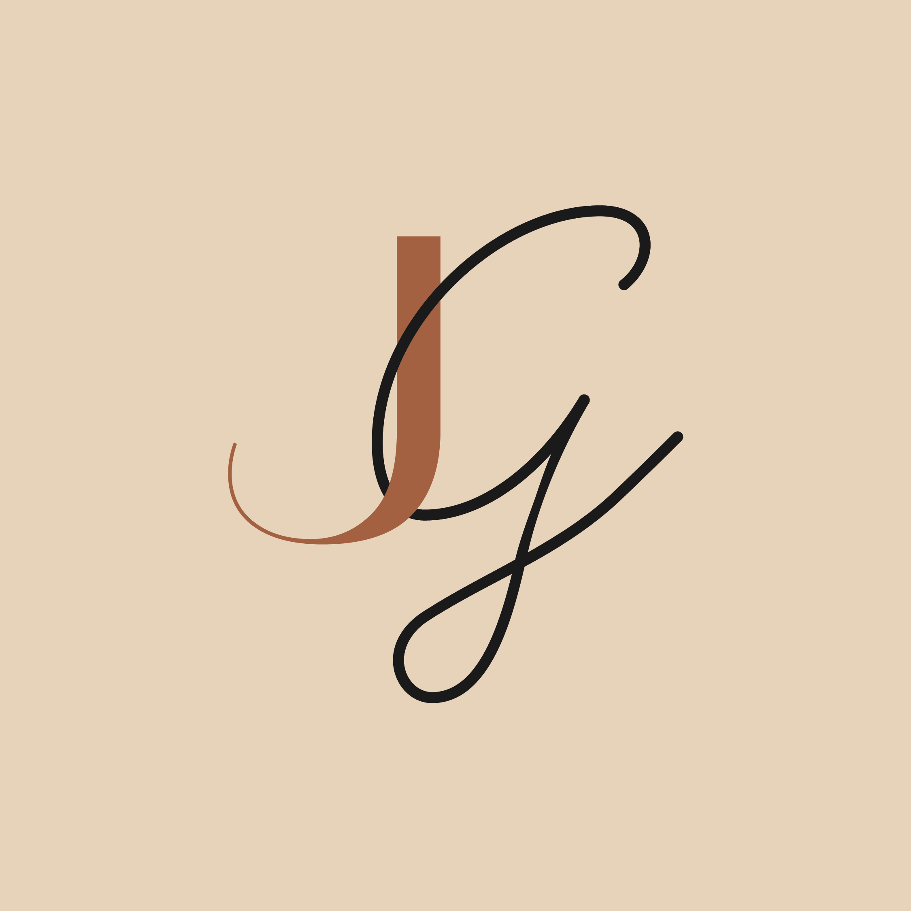
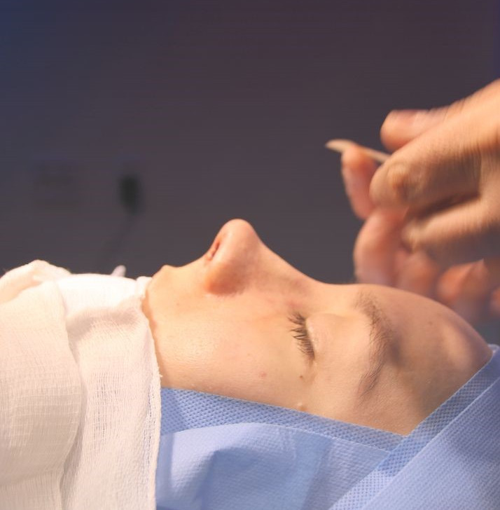
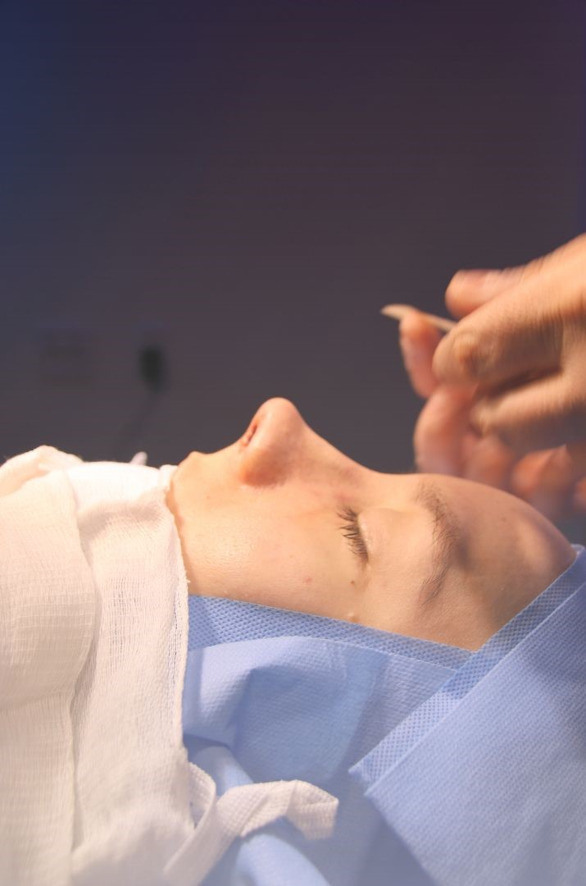

<!DOCTYPE html>
<html lang="pt-br">
<head>
    <meta charset="UTF-8">
    <meta http-equiv="X-UA-Compatible" content="IE=edge">
    <meta name="viewport" content="width=device-width, initial-scale=1.0">
    <meta name="description" content="Landing Page sobre trabalhos e serviços oferecidos pela Dra Júlia Gaspar, médica otorrinolaringologista e cirurgiã plástica">
    <meta name="author" content="Paulo Renan Teixeira Araújo">
    <meta name="robots" content="index, follow">

    <!--Links para estilos CSS-->
    <link rel="stylesheet" href="estilos/style.css">
    <link rel="stylesheet" href="estilos/media_query.css">
    <link rel="stylesheet" href="estilos/swiper-bundle.min.css">

    <!--Links para fontes provenientes do Google Fonts-->
    <link rel="preconnect" href="https://fonts.googleapis.com">
    <link rel="preconnect" href="https://fonts.gstatic.com" crossorigin>
    <link href="https://fonts.googleapis.com/css2?family=Sora&family=Inter&family=Hind+Vadodara&family=Open+Sans&family=Roboto:wght@700&family=Plus+Jakarta+Sans&family=Material+Symbols+Outlined:opsz,wght,FILL,GRAD@20..48,100..700,0..1,-50..200" rel="stylesheet">


    <title>Dra. Júlia Gaspar | Otorrinolaringologista e cirugiã plástica/title>
</head>
<body>
    <header>
        
        

        <!--Menu versão telas maiores-->
        <span id="burguer" class="material-symbols-outlined" onclick="clickMenu()">
            menu
        </span>
        <nav id="menu">
            <a class="menu-item" href="#sessaoprincipal">Home</a>
            <a class="menu-item" href="#sessaoespecialidades">Procedimentos</a>
            <a class="menu-item" href="#sessaofeedbacks">Feedbacks</a>
            <a class="menu-item" href="#sessaofinal">Agendamentos</a>
        </nav>
    </header>

    <!--Menu versão mobile-->
    <nav id="menu-mobile">
        <a class="menu-mobile-item" href="#sessaoprincipal">Home</a>
        <a class="menu-mobile-item" href="#sessaoespecialidades">Procedimentos</a>
        <a class="menu-mobile-item" href="#sessaofeedbacks">Feedbacks</a>
        <a class="menu-mobile-item" href="#sessaofinal">Agendamentos</a>
    </nav>

    <main>

        <!--Primeira Sessão-->
        <section id="sessaoprincipal">
            <div class="maintext">
                <h1>Júlia Gaspar</h1>
                <div id="prof">
                    <p class="profissao">Médica Otorrinolaringologista e cirurgiã plástica facial.</p>
                </div>
                <p class="registro">CRM-SP: 212523 RQE: 119542</p>
                <p class="proposito">Meu propósito é ajudar você a ter mais saúde, qualidade de vida e autoestima!</p>
                <div class="botao">
                    <a href="https://wa.me/5511945918631" target="_blank"><button class="agendeconsulta1">Agende a sua consulta</button></a>
                </div>
            </div>
        </section>

        <!--Segunda Sessão-->
        <section id="sessaoespecialidades" >
            <h2 class="subtitulo1">Procedimentos</h2>
            <p class="postitulo">Conheça os procedimentos e cirurgias que realizo.</p>
            <div class="slide-mobile">

                <!--Cards para mobile-->
                <div class="container">
                    
                    <p class="especialidade">Blefaroplastia</p>
                    <p class="conceito">Cirurgia das pálpebras que ameniza os sinais da idade, corrige excesso de pele e rugas.</p>
                    <button class="botao-navegacao botao-anterior" onclick="proxImagem()">❮</button>
                    <button class="botao-navegacao botao-proximo" onclick="antImagem()">❯</button>
                </div>
                <div class="container remova">
                    
                    <p class="especialidade">Rinoplastia</p>
                    <p class="conceito">Cirurgia que une o funcional e a estética, proporcionando um nariz mais harmônico e uma melhor respiração.</p>
                    <button class="botao-navegacao botao-anterior" onclick="proxImagem()">❮</button>
                    <button class="botao-navegacao botao-proximo" onclick="antImagem()">❯</button>
                </div>
                <div class="container remova">
                    
                    <p class="especialidade">Facelift</p>
                    <p class="conceito">Conhecido como ritidoplastia, tem como objetivo rejuvenescer, reposicionando estruturas da face.</p>
                    <button class="botao-navegacao botao-anterior" onclick="proxImagem()">❮</button>
                    <button class="botao-navegacao botao-proximo" onclick="antImagem()">❯</button>
                </div>
                <div class="container remova">
                    
                    <p class="especialidade">Otoplastia</p>
                    <p class="conceito">Corrige orelhas proeminentes (orelhas de abano) ou também o formato delas.</p>
                    <button class="botao-navegacao botao-anterior" onclick="proxImagem()">❮</button>
                    <button class="botao-navegacao botao-proximo" onclick="antImagem()">❯</button>
                </div>
                <div class="container remova">
                    
                    <p class="especialidade">Lobuloplastia</p>
                    <p class="conceito">Corrige deformidades causadas por brincos pesados ou alargadores.</p>
                    <button class="botao-navegacao botao-anterior" onclick="proxImagem()">❮</button>
                    <button class="botao-navegacao botao-proximo" onclick="antImagem()">❯</button>
                </div>
                <div class="container remova">
                    
                    <p class="especialidade">Mentoplastia</p>
                    <p class="conceito">Cirurgia plástica do mento (queixo), com o objetivo de melhorar a harmonia da face.</p>
                    <button class="botao-navegacao botao-anterior" onclick="proxImagem()">❮</button>
                    <button class="botao-navegacao botao-proximo" onclick="antImagem()">❯</button>
                </div>
                <div class="container remova">
                    
                    <p class="especialidade">Toxina Botulínica</p>
                    <p class="conceito">Age nos músculos da face e contribui para o rejuvenescimento facial, amenizando rugas.</p>
                    <button class="botao-navegacao botao-anterior" onclick="proxImagem()">❮</button>
                    <button class="botao-navegacao botao-proximo" onclick="antImagem()">❯</button>
                </div>
            </div>


            <!--Cards para telas maiores-->
            <div class="slide-container swiper">
                <div class="slide-content">
                    <div class="card-wrapper swiper-wrapper">
        
                            <div class="card swiper-slide">
                                <div class="card-image">
                                    
                                </div>
                                <div class="card-content">
                                    <p class="especialidade1">Rinoplastia</p>
                                    <p class="conceito1">Cirurgia que une o funcional e a estética, proporcionando um nariz mais harmônico e uma melhor respiração.</p>
                                </div>
                            </div>
                            <div class="card swiper-slide">
                                <div class="card-image">
                                    
                                </div>
                                <div class="card-content">
                                    <p class="especialidade2">Blefaroplastia</p>
                                    <p class="conceito2">Cirurgia das pálpebras que ameniza os sinais da idade, corrige excesso de pele e rugas.</p>
                                </div>
                            </div>
                            <div class="card swiper-slide">
                                <div class="card-image">
                                    
                                </div>
                                <div class="card-content">
                                    <p class="especialidade3">Facelift</p>
                                    <p class="conceito3">Conhecido como ritidoplastia, tem como objetivo rejuvenescer, reposicionando estruturas da face.</p>
                                </div>
                            </div>
                            <div class="card swiper-slide">
                                <div class="card-image">
                                    
                                </div>
                                <div class="card-content">
                                    <p class="especialidade4">Otoplastia</p>
                                    <p class="conceito4">Corrige orelhas proeminentes (orelhas de abano) ou também o formato delas.</p>
                                </div>
                            </div>
                            <div class="card swiper-slide">
                                <div class="card-image">
                                    
                                </div>
                                 <div class="card-content">
                                    <p class="especialidade5">Lobuloplastia</p>
                                    <p class="conceito5">Corrige deformidades causadas por brincos pesados ou alargadores.</p>
                                </div>
                            </div>
                            <div class="card swiper-slide">
                                <div class="card-image">
                                    
                                </div>
                                <div class="card-content">
                                    <p class="especialidade6">Mentoplastia</p>
                                    <p class="conceito6">Cirurgia plástica do mento (queixo), com o objetivo de melhorar a harmonia da face.</p>
                            </div>
                            <div class="card7 swiper-slide">
                                    <div class="card-image">
                                    
                                    </div>
                                    <div class="card-content">
                                        <p class="especialidade7">Toxina Botulínica</p>
                                        <p class="conceito7">Age nos músculos da face e contribui para o rejuvenescimento facial, amenizando rugas.</p>
                                    </div>
                            </div>
                        </div>
            </div>

            <!--Botões para passar slides do swiper em telas maiores-->
            <div class="swiper-button-next"></div>
            <div class="swiper-button-prev"></div>
        </section>

        <!--Terceira Sessão-->
        <section id="sessaofeedbacks">
            <h2 class="subtitulo2">Feedbacks</h2>
            <p class="postitulo">Veja o que os meus pacientes estão falando!</p>
            <div id="comments">
                <div class="caixacomentarios visivel">
                    <div class="aspas">
                        
                        
                    </div>
                    <p class="comentarios">Indescritível ter um sonho realizado pelas mãos da Dra. Júlia Gaspar! Desde o primeiro atendimento até o pós somente elogios para essas mãos de fada!</p>
                    <p class="cliente"> <span class="trav">–</span> Helen Simões</p>
                </div>
                <div class="caixacomentarios oculto1">
                    <div class="aspas">
                        
                        
                    </div>
                    <p class="comentarios">A Dra Júlia é fantástica! Operei tanto funcional quanto estética com ela e foi um sonho! As consultas de acompanhamento foram muito boas, indico de olhos fechados!</p>
                    <p class="cliente"><span class="trav">–</span> Maria Eduarda</p>
                </div>
                <div class="caixacomentarios oculto2">
                    <div class="aspas">
                        
                        
                    </div>
                    <p class="comentarios">Super recomendo! Realizei alguns procedimentos e minha qualidade de vida foi de 0 a 100 em algumas horas. Atendimento excelente, profissional super qualificada!</p>
                    <p class="cliente"><span class="trav">–</span> Catia Aparecida</p>
                </div>
            </div>
        </section>

        <!--Quarta Sessão-->
        <section id="sessaofinal">
            
            
            <div class="text-sessaofinal">
                <h3>Meu compromisso é com a sua qualidade de vida!</h3>
                    <p id="paragfinal">Agende a sua consulta e realize o sonho de ter saúde e qualidade de vida, alcançando os seus sonhos e objetivos estéticos!</p>
                <a href="https://wa.me/5511945918631" target="_blank"><button class="agendeconsulta2">Agende a sua consulta</button></a>
                <span id="logo-whatsapp-instagram">
                    <a href="https://www.instagram.com/dra.juliagasparsantos/" target="_blank"></a>
                    <a href="https://wa.me/5511945918631" target="_blank"></a>
                </span>
            </div>

            <div class="text-sessaofinal2">
                <h3>Meu compromisso é com a sua qualidade de vida!</h3>
                    <p id="paragfinal2">Agende a sua consulta e realize o sonho de ter saúde e qualidade de vida, alcançando os seus sonhos e objetivos estéticos!</p>
                <a href="https://wa.me/5511945918631" target="_blank"><button class="agendeconsulta2">Agende a sua consulta</button></a>
            </div>
        </section>
    </main>

    <!--Estrutura do Rodapé-->
    <div id="background-footer">
        <footer>
            <h4>Júlia Gaspar</h4>
            <p id="apresentacaomobile">Sou médica otorrinolaringologista, mestre em rinologia, pós-graduada em rinoplastia, e com fellowship em cirurgia plástica facial.</p>

            <!--Apresentação para telas maiores-->
            <ul id="apresentacao">
                <li>Médica otorrinolaringologista com residência médica realizada na Universidade Federal do Estado do Rio de Janeiro (UNIRIO).</li>
                <li>Mestrado pela Universidade Federal de São Paulo (UNIFESP).</li>
                <li>Fellowship no Instituto Paranaense de Otorrinolaringologia (IPO).</li>
                <li>Pós-graduação em Rinoplastia no Instituto Jurado.</li>
                <li>Fellowship em Cirurgia Plástica da Face com Dr. Raphael Gomes.</li>
            </ul>
                <div style="padding: 0 0 5px 12px;">
                    <a href="tel:11945918631" target="_blank">
                        <picture class="iconetelefone">
                            <source media="(max-width: 550px)" srcset="imagens/call_mobile.png" type="image/png">
                            
                        </picture>
                        <p class="numtelefone"> (11) 94591-8631</p>
                    </a>
                </div>
            <div style="padding: 0 0 0 12px;">
                <a href="mailto:contato@juliagaspar.com.br" target="_blank">
                    <picture class="iconemail">
                        <source media="(max-width: 550px)" srcset="imagens/mail_mobile.png" type="image/png">
                        
                    </picture>
                    <p class="email">contato@juliagaspar.com.br</p>
                </a>
            </div>
            <div id="logo-wa-in">
                <a href="https://wa.me/5511945918631" target="_blank"></a>
                <a href="https://www.instagram.com/dra.juliagasparsantos/" target="_blank"></a>
            </div>
            <a href="https://www.google.com/maps?q=R.+Mato+Grosso,+306+-+cj.1406+-+Higienópolis,+São+Paulo+-+SP" target="_blank">
                <div id="localizacaomobile">
                    
                </div>
                <div id="container-endereco">
                    <p id="endereco">R. Mato Grosso, 306 - sala 1406 - Higienópolis, SP</p>
                </div>
            </a>

            <!--Mapa do google maps-->
            <aside id="localizacao">
                <iframe src="https://www.google.com/maps/embed?pb=!1m18!1m12!1m3!1d3657.5069467995268!2d-46.65845361085031!3d-23.550229736475792!2m3!1f0!2f0!3f0!3m2!1i1024!2i768!4f13.1!3m3!1m2!1s0x94ce5831af5178b1%3A0x27d2d1394fb06a41!2sR.%20Mato%20Grosso%2C%20306%20-%20cj.1406%20-%20Higien%C3%B3polis%2C%20S%C3%A3o%20Paulo%20-%20SP%2C%2001239-040!5e0!3m2!1spt-BR!2sbr!4v1703092607174!5m2!1spt-BR!2sbr" style="border:0;" allowfullscreen="" loading="lazy" referrerpolicy="no-referrer-when-downgrade"></iframe>
            </aside>

            <p id="rodape">Júlia Gaspar | CRM-SP: 212523  RQE: 119542</p>
            <br>
        </footer>
    </div>

    <!--Links para Javascript-->
    <script src="js/swiper-bundle.min.js"></script>
    <script src="js/script.js"></script>
</body>
</html>